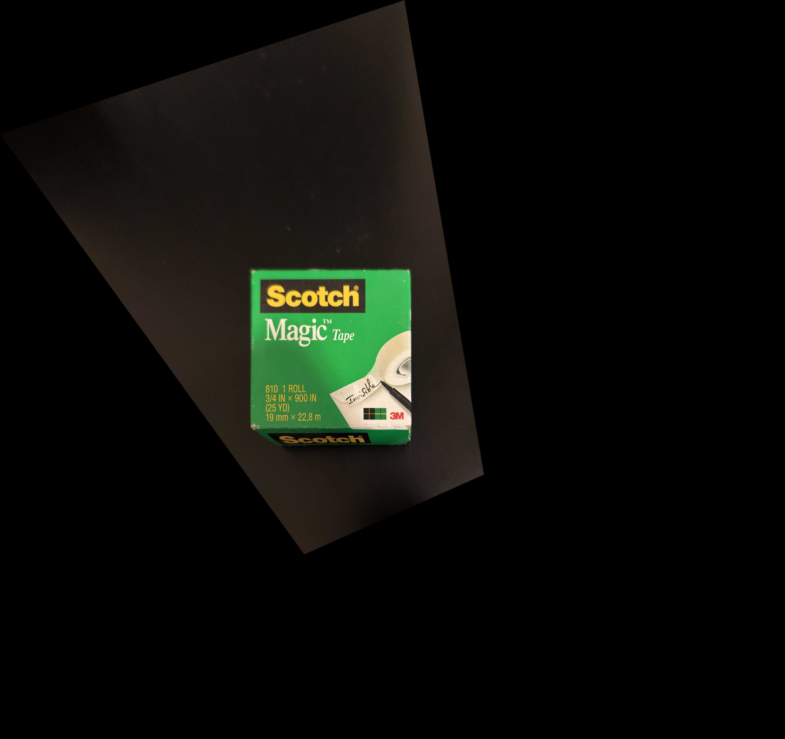
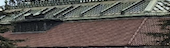
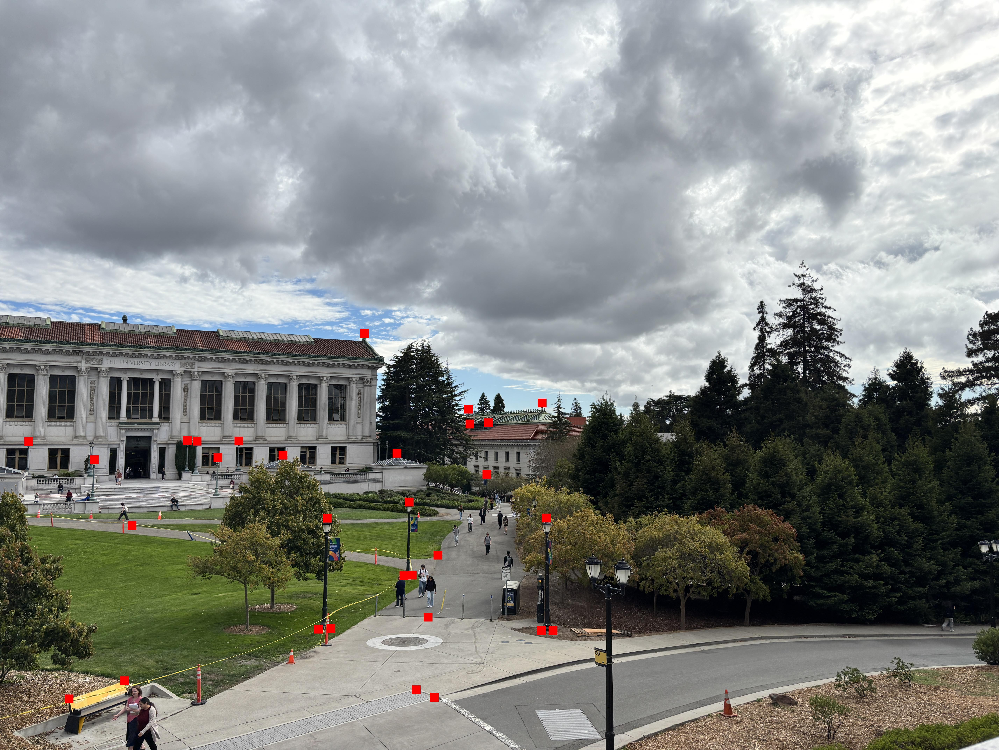
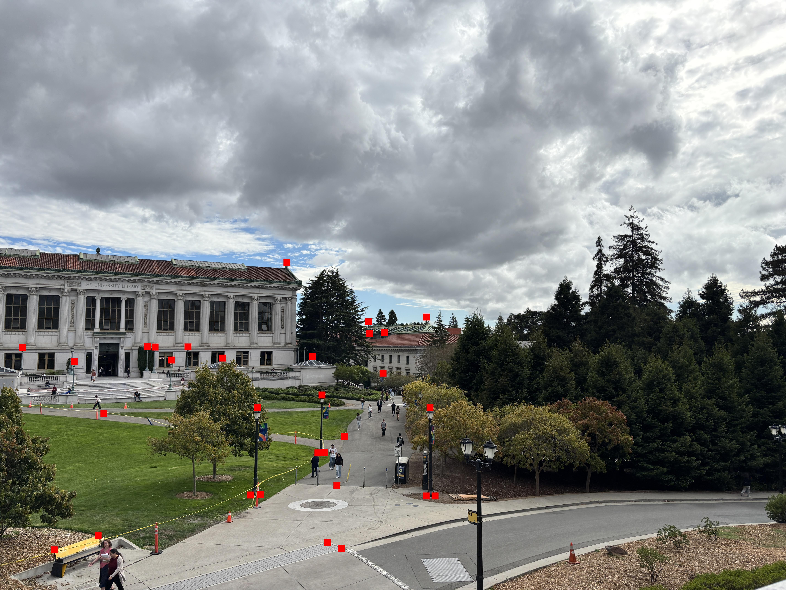
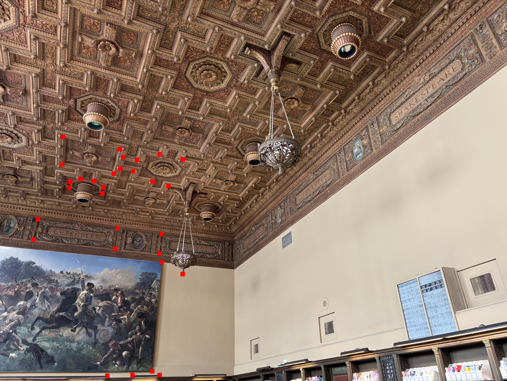
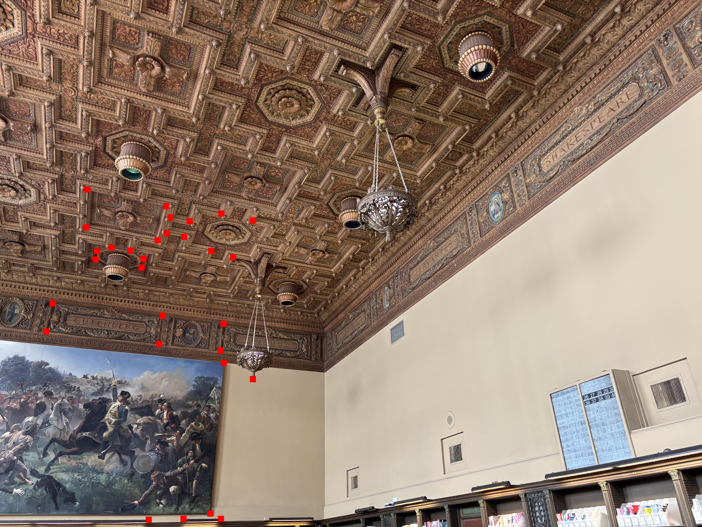

Project 3: [Auto]Stitching Photo Mosaics
A: Image Warping and Mosaicing
A.1: Shoot the Pictures
I shot the following pairs of pictures.
A.2: Recover Homographies
I used the correspondence tool linked on the
course website
to manually label correspondences between the images.
As shown on discussion 5, the standard form of writing a homgraphy matrix,
$$p'=Hp$$ or $$\begin{bmatrix}
\lambda u \\ \lambda v \\ \lambda
\end{bmatrix} = \begin{bmatrix}
h_1 & h_2 & h_3 \\
h_4 & h_5 & h_6 \\
h_7 & h_8 & 1
\end{bmatrix} \begin{bmatrix}
x \\ y \\ 1
\end{bmatrix}
$$ can be rewritten as
$$
\begin{bmatrix}
x & y & 1 & 0 & 0 & 0 & -ux & -uy \\
0 & 0 & 0 & x & y & 1 & -vx & -vy \\
\end{bmatrix} \begin{bmatrix}
h_1 \\ h_2 \\ h_3 \\ h_4 \\ h_5 \\ h_6 \\ h_7 \\ h_8
\end{bmatrix} = \begin{bmatrix}
u \\ v
\end{bmatrix}
$$
Stacking multiple instances of the rows above can create an overdetermined linear system
for solving for the vector h, which is solved using least squares regression.
The homography matrices computed for the pairs of images above are as follows:
First pair (Soda Hall):
$$
\begin{bmatrix}
8.41155304e-01 & -1.57081972e-01 & 3.02979154e+02 \\
-2.60002942e-02 & 5.21127618e-01 & 2.40647844e+03 \\
-1.77894641e-06 & -8.75421406e-05 & 1.00000000e+00 \\
\end{bmatrix}
$$
Second pair (Memorial Glade)
$$
\begin{bmatrix}
8.33960263e-01 & -2.41094962e-01 & 3.69377944e+02 \\
6.66370834e-02 & 4.66716782e-01 & 2.25722525e+03 \\
-4.77988095e-07 & -9.37005891e-05 & 1.00000000e+00 \\
\end{bmatrix}
$$
Third pair (Doe Library)
$$
\begin{bmatrix}
7.23476200e-01 & -4.69043453e-01 & 8.35368887e+02 \\
1.92322905e-01 & 2.96754907e-01 & 2.61919785e+03 \\
-1.66235471e-05 & -1.10111704e-04 & 1.00000000e+00 \\
\end{bmatrix}
$$
A.3: Warp the Images
I implemented warpImageNearestNeighbor(im, H) and warpImageBilinear(im, H), and
tested it on the image of a tape box below:
I assigned square coordinates ((0, 0), (0, 1000), (1000, 0), (1000, 1000)) to the corners
of the box in the image, and performed rectification to get the following images. The image
on the left is from nearest neighbors, while the one of the right is from bilinear interpolation.


I also performed rectification on one of the images in each of the other pairs.
The warping of the glade is shown below.
The nearest neighbors approach was signficantly faster, even
with vectorization, because it required fewer matrix operations
to accomplish.
The nearest neighbors and bilinear interpolation approaches handled
values outside of valid area differently due to the implementaiton,
but the alpha mask (not shown above) is set to 0 for invalid regions,
so after the alpha mask is applied, invalid regions will not have a value.
Another different between nearest neighbors and bilinear interpolation is
that nearest neighbors is more prone to aliasing to the the lower amount of sampling.
The images below demonstrate this from a building in the distance of the photo
of the glade. The image on the left is from nearest neighbors, while the image
on the right is from bilinear interpolation.


In particular, the pattern on the roof is more consistent from bilinear
interpolation compared to nearest neighbors.
A.4: Blend the Images into a Mosaic
When warping images, I used the homography matrix on the corners of the image to determine
the range of coordinates needed to contain the entire warped image. This computation also
provides information about where the two images are offset from each other, so they can
be aligned by a translation.
To create the mosaic, I used a alpha mask that is 1 at the center
of the image and linearly goes towards 0 at the edges. Then, I translate the images relative
to each other so their corresponding points align, and average them, using their alpha
mask values as weights.
The results of creating mosaics are shown below.
The first pair of images could not align well, and getting certain corresponding
points to align caused others to become misaligned. This is likely due to relevant objects
(like the pole) being much closer to the camera compared to other images, meaning the
fact that the photos did not truly share a point of projection (due to my moving the camera)
was more significant for that pair of images.


 

 
